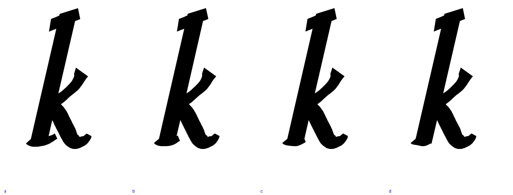
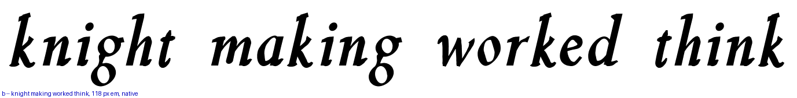
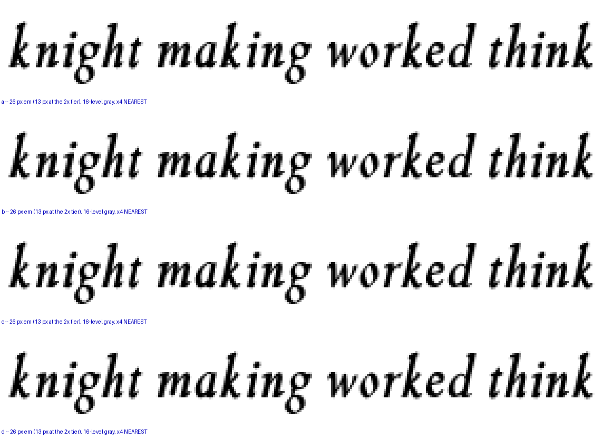

The air goes under the kick and the two branches stay put. The white there is the wedge between the stem’s own foot outstroke and the descending leg, and it measures 8,415 square units against the Italic 400’s 14,396, with a widest disc of 55.5 against 83.5 and an apex sitting 35 units lower — squeezed shut from above by a foot that reaches as far as it ever did while the leg beside it thickens. The k is not in the per-letter exit table, so it takes the longest outstroke in the alphabet, the n’s. These arms shorten the k’s own foot, above stem 84 only. The arm, the leg, their junction and the reach are all untouched.
| arm | foot, x the stem | wedge area | widest disc |
|---|---|---|---|
| a | 0.80 — as it stands | 8,415 | 55.5 |
| b | 0.56 | 9,591 | 64.4 |
| c | 0.44 | 10,024 | 75.0 |
| d | 0.32 | 10,317 | 81.5 |
| the Italic 400, for reference | 14,396 | 83.5 | |
Arm d puts the widest disc within two units of the 400’s. The wedge’s total area stays smaller because the leg beside it is thicker; the disc is the measure that matches what the eye reads as air.


